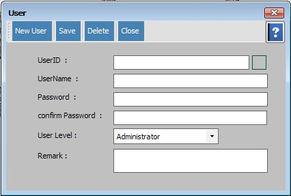

User Setup

- System Utilities အောက်မှ Security မှ User အားနှိပ်ပါ။
- User Profile Form သည် Software အားသုံးမည့်သူတစ်ဦးချင်းစီကိုLevel အလိုက်သတ်မှတ်ရသော Formဖြစ်ပါသည်။
- New User ကိုနှိပ်ပြီး User အသစ်ထပ်ထည့်နိုင်ပါသည်။ UserName, Password, Confirm Password, User level တို့ကိုဖြည့်စွက်ရပါမည်။ သတ်မှတ်ပြီးသော User များကို UserID ဘေးမှ Search Button အားနှိပ်ပြီး ပြန်ခေါ်နိုင်ပါသည်။